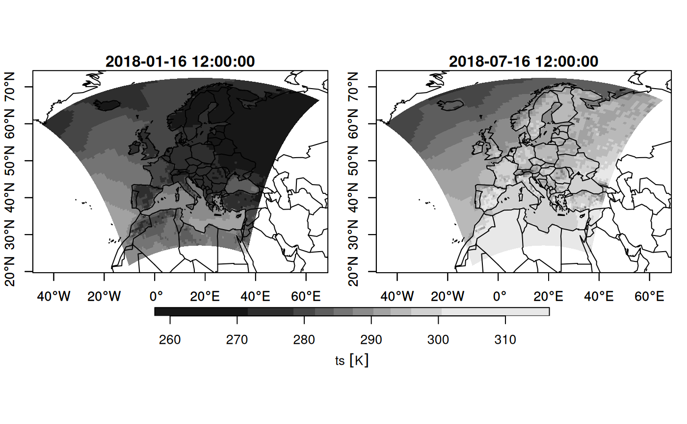
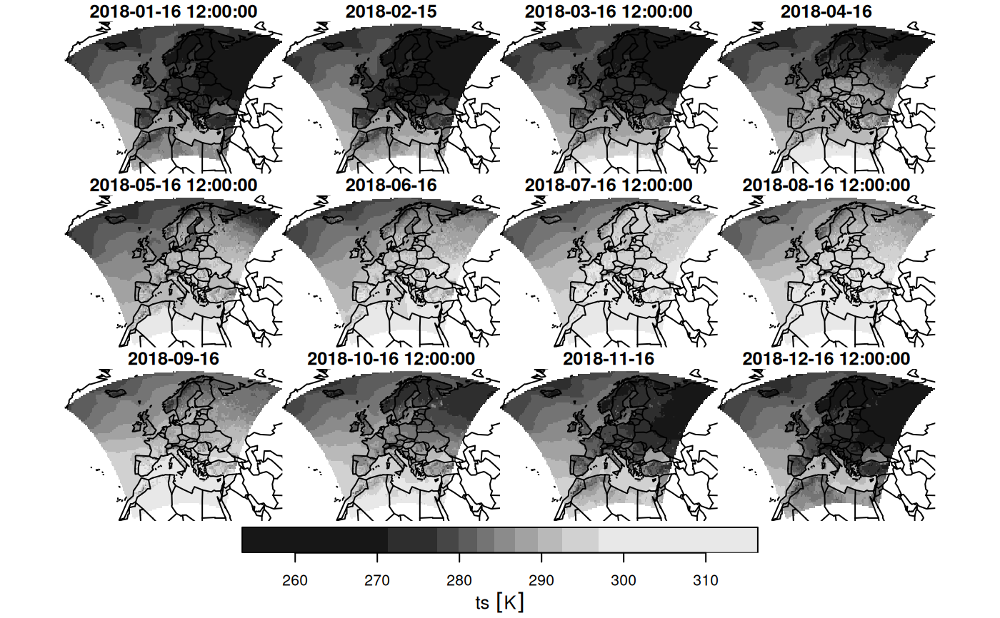

Transform rotated pole long/lat regular grid to unrotated curvilinear grid
Source:R/rotate.R
st_rotate.RdTransform rotated long/lat regular grid to unrotated curvilinear grid
Usage
# S3 method for stars
st_rotate(.x, lon0, lat0, north = TRUE, ...)
# S3 method for sfc
st_rotate(.x, lon0, lat0, north = TRUE, ...)
# S3 method for sf
st_rotate(.x, lon0, lat0, north = TRUE, ...)Arguments
- .x
object of class
stars- lon0
longitude of the rotated pole in degrees
- lat0
latitude of the rotated pole in degrees
- north
logical; if
TRUEthe pole refers to the North pole, otherwise the South pole- ...
ignored
Examples
if (require("starsdata") && require("maps")) {
# data downloaded from https://esgf-data.dkrz.de/search/cosmo-rea/
nc = "netcdf/ts_EUR-6km_ECMWF-ERAINT_REA6_r1i1p1f1_COSMO_v1_mon_201801-201812.nc"
f = system.file(nc, package = "starsdata")
m = read_mdim(f, "ts")
print(m)
# NOTE this function is obsolete when reading m as
# m = read_mdim(f, "ts", curvilinear = c("longitude", "latitude"))
if (require(RNetCDF)) {
x = open.nc(f)
lon = att.get.nc(x, "rotated_latitude_longitude", "grid_north_pole_longitude")
lat = att.get.nc(x, "rotated_latitude_longitude", "grid_north_pole_latitude")
close.nc(x)
print(c(lon = lon, lat = lat))
} else {
lon = -162
lat = 39.25
}
m1 = st_rotate(m, lon, lat)
print(m1)
h = function() maps::map(add = TRUE)
plot(m1, downsample = c(10, 10, 5), axes = TRUE, hook = h, mfrow = c(1, 2))
# curvilinear grid: downsample for plotting speed
m2 = st_warp(m1, crs = st_crs("OGC:CRS84"), threshold = .1)
plot(m2, hook = h, mfrow = c(3, 4)) # regular grid: plots fast
}
#> Loading required package: maps
#> stars object with 3 dimensions and 1 attribute
#> attribute(s), summary of first 1e+05 cells:
#> Min. 1st Qu. Median Mean 3rd Qu. Max.
#> ts [K] 277.3233 284.7061 286.1046 286.5914 288.003 296.9786
#> dimension(s):
#> from to offset delta refsys values x/y
#> rlon 1 848 -28.43 0.055 NA NULL [x]
#> rlat 1 824 -23.43 0.055 NA NULL [y]
#> time 1 12 NA NA Date 2018-01-16,...,2018-12-16
#> Loading required package: RNetCDF
#> lon lat
#> -162.00 39.25
#> stars object with 3 dimensions and 1 attribute
#> attribute(s), summary of first 1e+05 cells:
#> Min. 1st Qu. Median Mean 3rd Qu. Max.
#> ts [K] 277.3233 284.7061 286.1046 286.5914 288.003 296.9786
#> dimension(s):
#> from to refsys values x/y
#> rlon 1 848 WGS 84 [848x824] -44.67,...,65.06 [x]
#> rlat 1 824 WGS 84 [848x824] 21.95,...,72.61 [y]
#> time 1 12 Date 2018-01-16,...,2018-12-16
#> curvilinear grid
#> Warning: using Euclidean distance measures on geodetic coordinates
#> downsample set to 5

